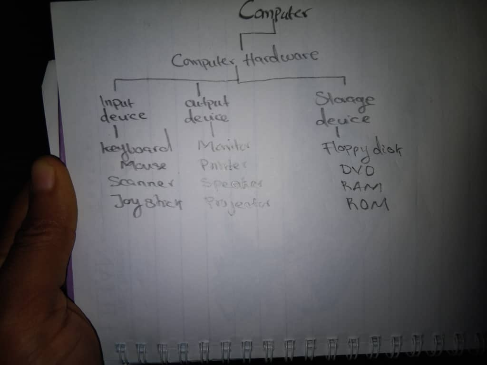

A device that operates without electricity
A machine that processes data into information
A manual device used for calculations
A tool that only stores information
A strong internet connection
Hardware and software
software applications and utility software
Manual calculation of data
A. Calculating totals in a spreadsheet
B. Entering text into a word processor
C. Organizing files into folders
D. Converting data into a graphical chart
The conversion of raw data into meaningful information
The storage of information in a database
The physical repair of computer hardware
Writing computer code to create programs
Web browser
Central Processing Unit (CPU)
Spreadsheet software
Operating system
Keyboard
Mouse
Microsoft Word
Random Access Memory (RAM)
The tangible parts of a computer
The set of instructions that direct a computer's operations
A protective cover for hardware
storage device for informat
A table of raw sales figures
A detailed report of customer trends
A presentation about company performance
A completed calculation of monthly revenue
Numbers without any context
Organized and meaningful data
A collection of unrelated facts
Random binary code

Printer
Graphics card
Operating system
Monitor
To protect hardware from damage
To give instructions to hardware for specific tasks
To connect different computers in a network
To process only visual data
Monitor
Keyboard
Speaker
Printer
Software
Random Access Memory (RAM)
Storage devices like hard drives or SSDs
Central Processing Unit (CPU)
Printing a document
Running calculations on a spreadsheet
Turning on a computer
Shutting down the system
Microsoft Excel
External hard drive
CPU cooling fan
Ethernet cable
Just hardware
Just software
Both hardware and software
Only a power supply
I want a full comprehensive meaning highlighting all the core parts.
Antivirus program
Motherboard
Database management system
Web browser
To send data into the computer
To display or present processed information
To store unprocessed data
To protect the computer system
Input device
Output device
Storage device
Processing device
System software
Application software
Hardware component
Peripheral device
A program is a group of instructions to perform a specific task.
System software
Application software
Application software
Firmware